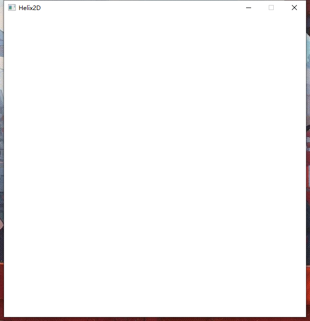
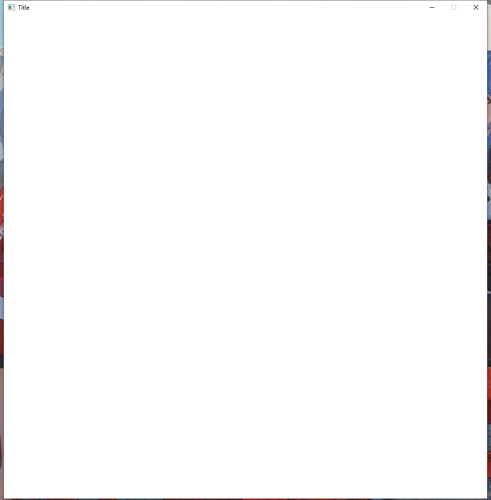

创建窗口
简单窗口的创建
窗口（Window）是图形界面的基础，有了窗口我们才能绘制图像，
所以，我们要先学会创建窗口
用以下代码创建一个窗口：
1 |
|
那么你就会看到以下这个窗口：

在学习过 C++ 的面向对象思想后，我们不难看出，一个Window类对象即代表一个窗口，我们对这个Window类的对象的所有操作，都将应用到我们实际的窗口中
（如果无法理解接下来的概念可以跳过）
接下来代码的循环乍一看貌似有些难懂，实际上它只是为了卡住main函数的运行
为什么我们需要卡住main函数的运行？
我们都知道，在 C++ 中，当main执行到return 0;语句时，整个程序就退出了。当整个程序退出后，我们的窗口也就全部关闭了。但Window类对象并不会卡住main的运行，如果我们不自己卡住main的运行，那我们的窗口就会立即消失
Sleep函数是Windows API中的一个函数，是为了休眠程序来释放CPU占用，具体细节呢此处并不多讲
https://learn.microsoft.com/zh-cn/windows/win32/api/synchapi/nf-synchapi-sleep
指定窗口的属性
可以看到，我们创建的窗口的标题是 “Helix2D” ，如果我们想修改它，该怎么做呢？
通过以下代码可以修改窗口的标题等属性：
1 |
|
这是修改后的窗口：

我们发现它的标题变成了”Title”，大小也变了，接下来我们就来讲讲Window类构造函数里传入的参数都是什么意思：
- title：窗口标题，一个宽字符串，字符串前要加L表示宽字符串
- width：窗口宽度，一个正整数，决定了窗口的宽度（除去标题栏）
- height：窗口高度，一个正整数，决定了窗口的高度（除去标题栏）
- parent：父窗口，一个
Window类的指针，填入nullptr代表没有父窗口 - fps：窗口帧率，你期望的窗口帧率
注：它们都有默认形参
通过这些，你就可以修改窗口的一些基本属性了
下一篇：绘制图像